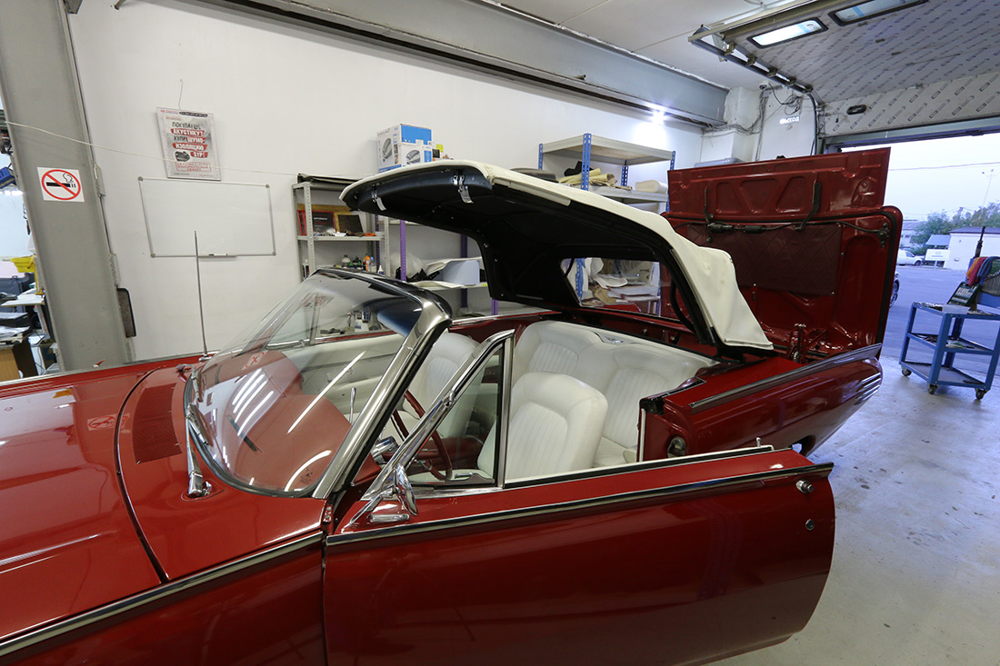
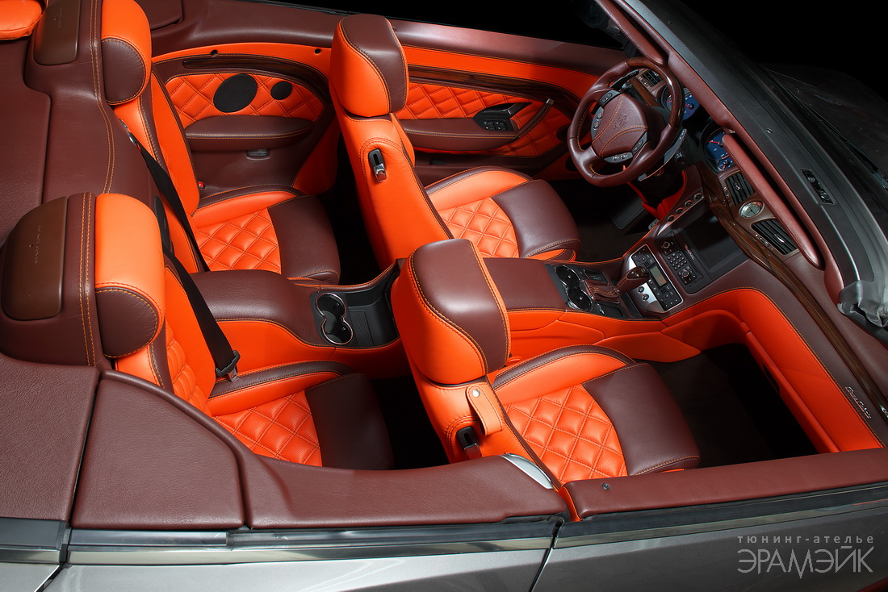
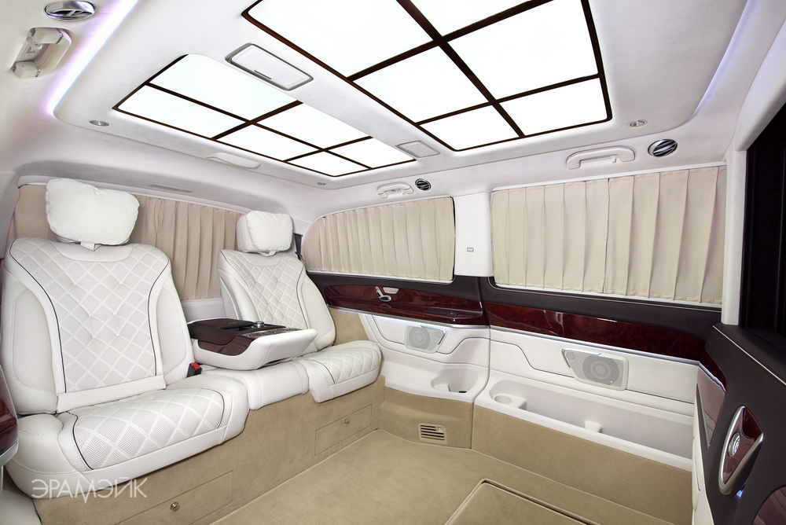

Добро пожаловать на официальный веб-сайт тюнинг-ателье «Эрамэйк»!
Тюнинг-ателье «Эрамэйк» работает в сфере услуг уже более двадцати лет. За это время специалисты «Эрамэйк» ни разу не дали повода усомниться в своем исключительном профессионализме. Мы используем профессиональное оборудование и материалы, умеем работать как с автомобилями элитного класса, так и с бюджетными моделями. Тюнинг автосалона — наша стихия, мы можем полностью гарантировать высокое качество итогового результата.
Тюнинг-ателье «Эрамэйк» занимается созданием интерьеров и установкой дополнительного оборудования на автомобили, а также водный и воздушный транспорт. Используемые материалы: алькантара, натуральная кожа, мех, карбон, шпон, алюминий, а также драгоценные и полудрагоценные камни, благородные металлы. Обращаясь к нам, вы всегда получите высокое качество исполнения отделочных работ и используемых материалов, а также внимательное отношение к клиенту.
Краткий список услуг нашего автоателье:
- Перетяжка салона кожей
- Пошив VIP-шторок
- Установка перегородок «пассажир—водитель»
- Перетяжка руля и изменение его анатомии
- Настил полов и изготовление ковриков
- Изготовление мягкой крыши для кабриолетов
- Вибро- и шумоизоляция салона
- Ремонт и перешив руля после сработавших подушек безопасности
- Мойка, полировка кузова и химчистка салона
- Установка аудио- и видеосистем любой сложности
Эксклюзивный тюнинг салона, как не что иное, подчеркнёт индивидуальность владельца автомобиля, его престиж. Наши специалисты способны воплотить в жизнь любой, даже самый смелый и оригинальный проект. Более того, профессиональные дизайнеры, работающие в нашем автоателье, всегда готовы предложить свой вариант оформления и перетяжки автомобильного салона. Согласитесь, осознание того, что салон вашего автомобиля не имеет аналогов во всем мире, согреет душу и наполнит ее гордостью!
Заказ услуг по обшивке салона авто кожей в «Эрамэйк» — выгодное вложение ваших средств. Мы предлагаем услуги тюнинга как для частных лиц, так и для компаний продавцов подержанных и новых автомобилей. Обращаясь за услугами по пошиву салона автомобиля кожей в автоателье «Эрамэйк» вы всегда получите качественную работу, которая преобразит автомобиль, добавит ему престижа и повысит его рыночную стоимость.